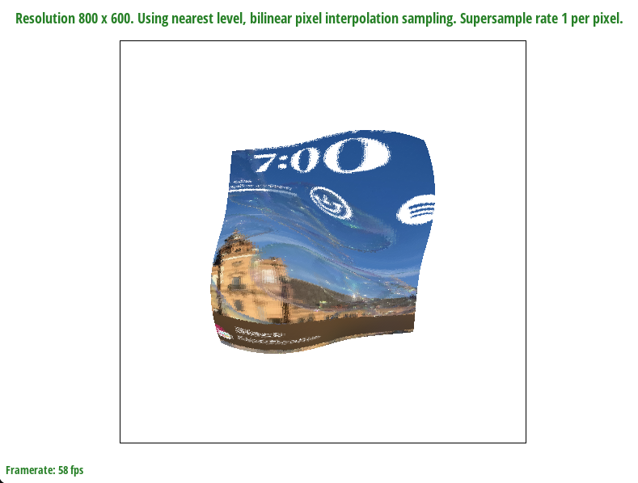

Overview
We built a Rasterizer using the triangle method and introduced supersampling to reduce aliasing. We also implemented texture mapping using barycentric coordinates and level sampling with mipmaps.
Section I: Rasterization
Part 1: Rasterizing single-color triangles
In this task, we implemented the rasterize_triangle function by sampling each pixel using a nested for loop to loop through every sample within the ranges of the bounding box. For each pixel, we used the helper function "inside_triangle" to perform the line tests to check if the pixel is within the triangle. We made sure to account for both clockwise and counter clockwise cases by checking for both greater and less than 0 in the line tests. If the pixel was within the triangle, we filled using the "fill_pixel" helper function.
Here are the results required. The single-color polygons were successfully rendered.
Part 2: Antialiasing triangles
In this task, we implemented supersampling to reduce aliasing when rasterizing the triangle. We calculated the resolution based on the given sample rate by calculating the new number of samples per edge using the formula sqrt(this->sample_rate) using another nested for loop. We store the samples in a sample_buffer before passing them into "resolve_to_framebuffer" function which downsampled the image back into its original resolution by averaging by the given sample_rate. We also modified "set_sample_rate" and "set_framebuffer_target" to account for the new sample_rate by multiplying the existing resolution by this->sample_rate. To prevent memory overflow, we called clear_buffers() whenever we set a new sample_rate or a new framebuffer_target.
Here are the results required. The triangle edges look smoother at a sample rate of 16 per pixel.
|
|
|
|
Part 3: Transforms
We implemented translate, scale and rotate according to the formulas in lecture.
Section II: Sampling
Part 4: Barycentric coordinates
Barycentric coordinates represents a point as a function of its vertices, this allows for easier calculation when doing interpolation since the coordinate is already expressed relative to its vertices. We implemented "rasterize_interpolated_triangle" and found the barycentric coordinates by calculating the alpha, beta and gamma values using the formula given in lecture. We then used these coordinates to interpolate the color values of each sample point.
Here are the results required.
Part 5: "Pixel sampling" for texture mapping
Pixel sampling is the process of sampling information from pixels around the intended coordinate to be rasterized.
Nearest pixel sampling takes the information of the nearest pixel to the intended coordinate.
Bilinear sampling takes a weighted value of each of the 4 pixels around the intended coordinate based on the distance from that pixel to the coordinate. This can be achieved by calculating the barycentric coordinate.
For psm == P_NEAREST, we updated the "sample_nearest" method by rounding the texel coordinates to the nearest sample while checking for edge cases to ensure we are not taking samples outside the bounding box.
For psm == P_LINEAR, we updated the "sample_bilinear" method by finding the four samples around the given texel coordinate and used linear interpolation to calculate the distances of each sample to the given
coordinate based on proportion.
For "rasterize_texture_triangle" we updated the SampleParams struct with the calculated uv vector by using the barycentric coordinate between the given uv values.
Here are the results required. The image looks distinctly smoother with bilinear sampling.

|
|
|
|
|
Bilinear sampling looks slightly smoother in areas where there is alot of contrasting pixels as it takes a weighted average of all the pixels around it allowing for a smoother transition between pixels. At higher resolutions or sampling rate there will not be a large difference as we are sampling sufficiently to avoid missing out any particular detail.
Part 6: "Level sampling" with mipmaps for texture mapping
Level sampling reduces aliasing for objects of difference depths in an image by sampling from different resolution levels in the mipmaps.
To implement level sampling for texture mapping, we sampled from different levels depending on the lsm passed in. In this task, we implemented support for sampling from different mipmap levels as we were previously only supporting level 0. In the "sample" function in the texture file, we added the logic to handle the different lsm modes.
First, we implemented the sampling from the default level 0 when lsm == L_ZERO by passing in 0 to the sampling_nearest and sampling_bilinear functions implemented in part 5. To handle lsm == L_NEAREST, we used the get_level helper function and then rounded the result to the closest integer. When handling L_LINEAR, we created 2 new functions to handle the continuous case, sampling_nearest_linear and sampling_bilinear_linear. They take in doubles for level instead and apply sampling_nearest and sampling_bilinear to a lower and upper level before averaging the result. We clamp the levels to 0 and kMaxMipLevels.
With regards to the helper function get_level, we had to calculate the barycentric coordinates of (x,y), (x+1,y) and (x, y+1). We clamped the values to (x,y) if they were not within the triangle. In get_level, we calculate the difference vectors and scale them by the width and height of the full-resolution texture image. Then, we use the formula from discussion 2/ lecture slides to calculate D.
Supersampling improves image quality and reduces aliasing signficantly but has a significantly higher computational cost and rendering time. This makes sense as we are processing more samples for each pixel in the final image. Level sampling can improve rendering speed as the renderer can access levels with lower-resolution textures when appropriate, therefore, reducing the number of texture samples needed but there can be more aliasing than supersampling. Selecting pixel sampling is more computationally efficient and it can reduce aliasing by averaging but can lower resolution.
Here are the results required.

|
|
|
|

|